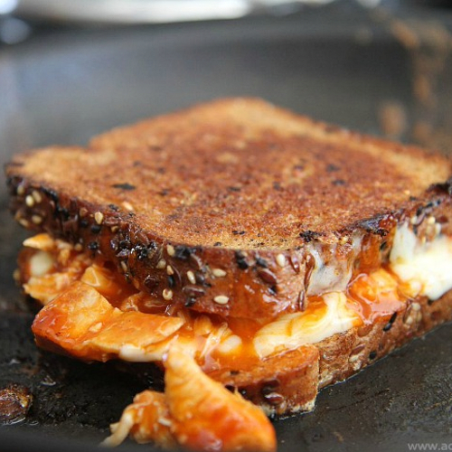

Buffalo Chicken Grilled Cheese - The Spicy Melt

Spice Up Your Life!
Are you tired of boring grilled cheese sandwiches? Do you crave that spicy kick in your meals? Look no further, The Spicy Melt is here to save your taste buds! This buffalo chicken grilled cheese sandwich is the perfect combination of creamy melted cheese, tender shredded chicken, and tangy blue cheese with a fiery buffalo sauce.
Ingredients of Fire
- 1 ½ tablespoons of Buffalo wing sauce (or more if you can handle it)
- ½ cup shredded cooked chicken
- 2 slices of white bread (or any bread that can handle the heat)
- 1 slice of pepper jack cheese (for extra spice)
- 3 tablespoons of crumbled blue cheese (for that tangy kick)
- 1 tablespoon of butter, softened (to cool down your taste buds)
Steps to Survive the Heat
- Mix shredded chicken, buffalo wing sauce, and blue cheese in a bowl.
- Preheat a small skillet over medium heat and prepare yourself for the heat.
- Spread 1/2 tablespoon of butter on one side of a slice of bread. Place bread butter-side-down onto the skillet bottom and place pepper jack cheese on top. Top with chicken mixture. Butter a second slice of bread with remaining butter on one side and place on top of the sandwich, butter-side-up.
- Cook the sandwich in the skillet until the bread is lightly browned, and flip it over to survive the other side; about 2 1/2 minutes per side. Remember to breathe!
Survival Tip
This sandwich is not for the weak. Have a glass of milk nearby to soothe the burn, or better yet, have a fire extinguisher ready!